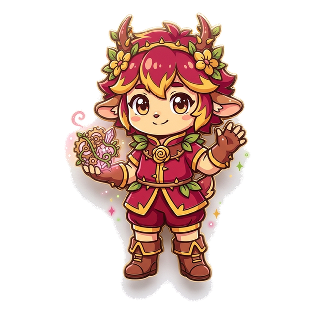
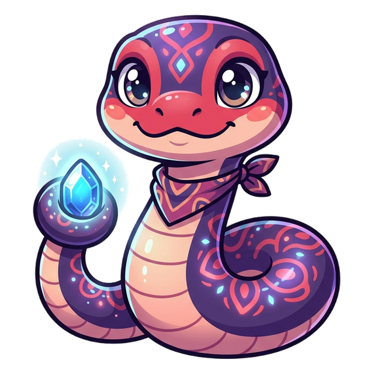
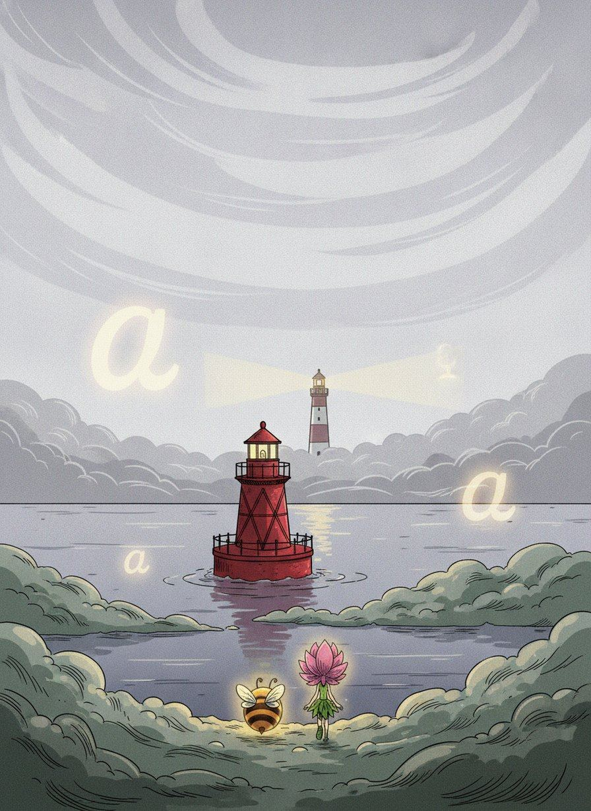
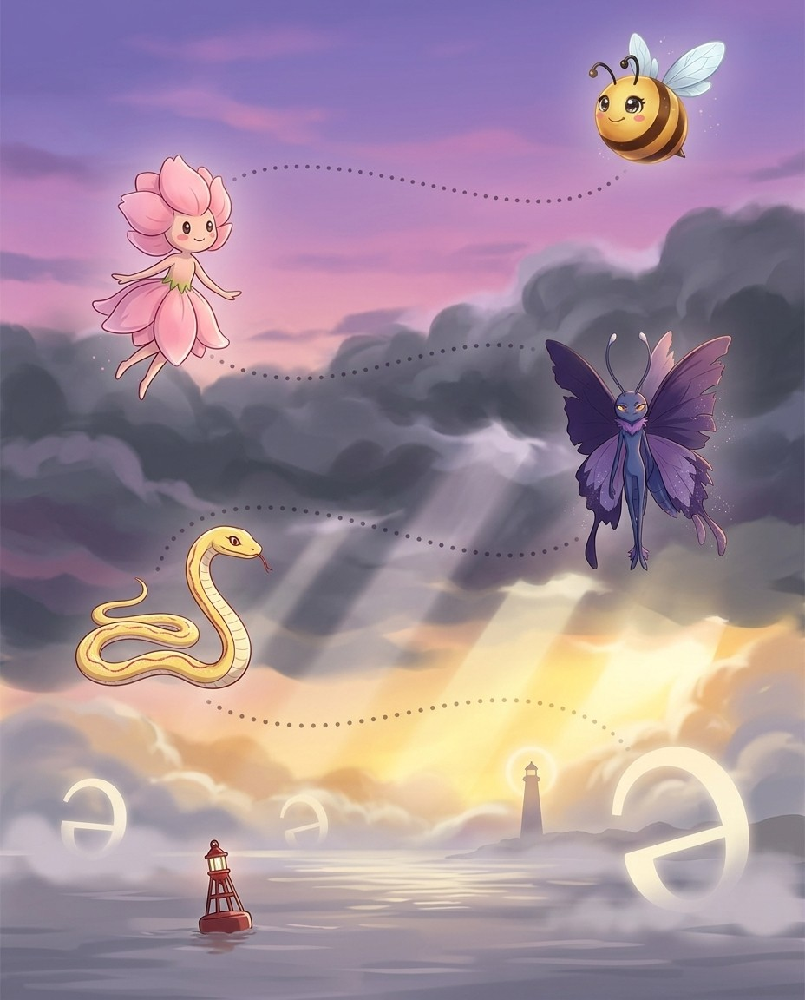
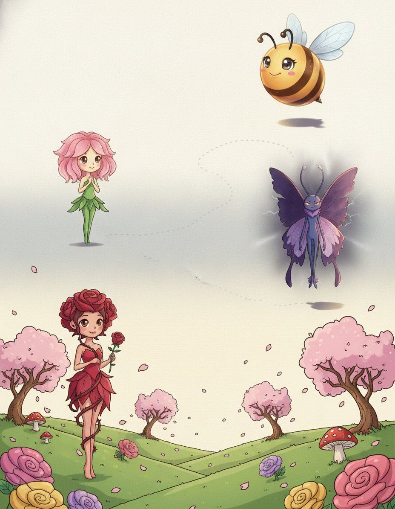
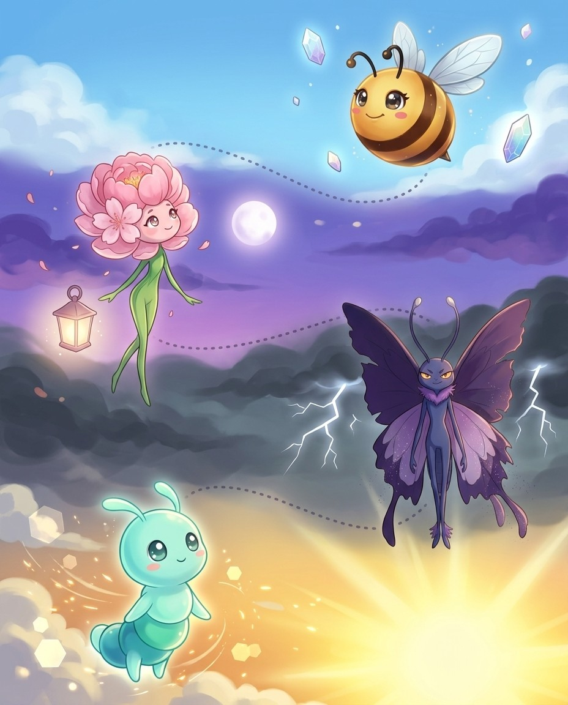
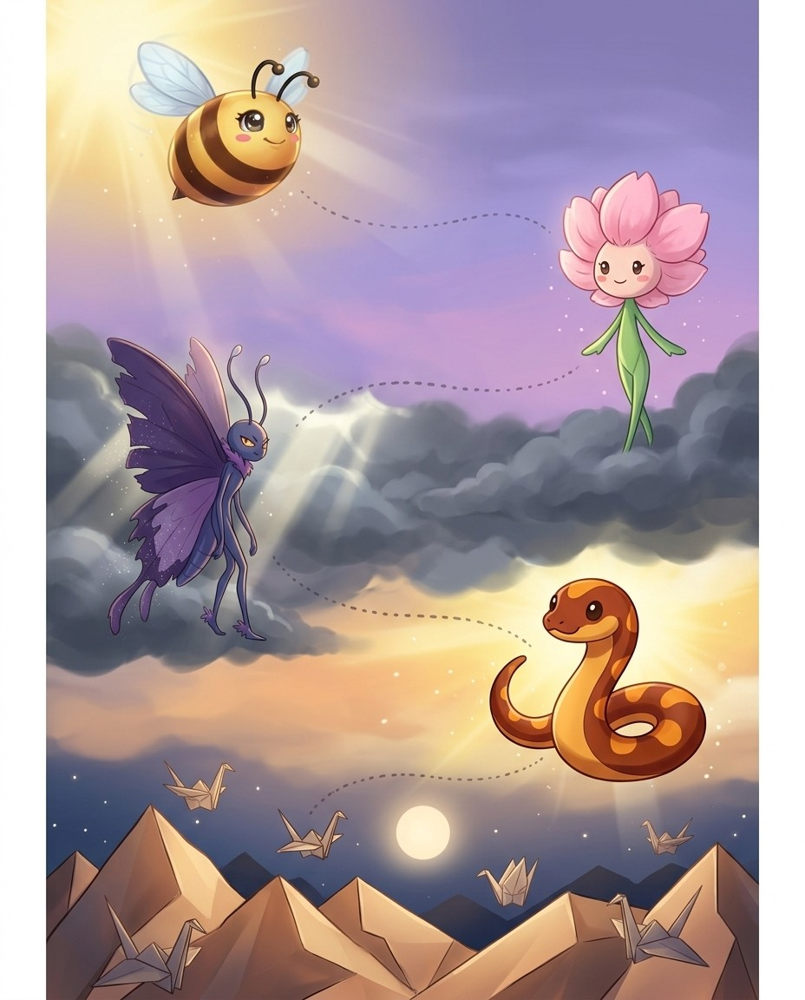

I'm Blossom. The vanishing vowel and its disguises. Nothing in this book is filler — if a page is here, a real speller lost a real word without it.
1
Read the story
Each chapter opens as a storyboard. Vex sets the trap; the crew talks you out of it.
2
Steal the pro move
The dark box is how a champion thinks on stage. It works on brand-new words too.
3
Spell out loud, then write
Say it, spell it aloud, write it. The order matters — it is how the stage will ask for it.
4
Pass the checkpoint
A short quiz on the chapter, gated at 90%. Circle your answers, then verify at the back.
5
Play the game, then revise
Every chapter ends with a fun game, answer key at the back. Revise all words at the end and circle the ones you can spell and define.
Bizzing Bee · Schwa Country1
Schwa CountryThe cast
Bizzy — and this book's guide, Blossom
The crew of Vol. 12
The ensemble for this volume. They host the drills and checkpoints; the work is still yours.
Bizzy — The little bee who spells the world back together, one petal at a time. · Blossom — Where Blossom lands, colour returns to the world.
Mamba
OVR 73
Champion of the Serpent Pack
The fastest speller in the grass.

Briar
OVR 68
Champion of the Enchanted Wood
Gentle rose, guarded by thorns.
Saucer
OVR 77
Champion of the Cosmos
Nobody’s quite sure what Saucer is. Saucer likes it that way.

Boa
OVR 72
Champion of the Serpent Pack
A gentle giant with beautiful patterns.
Wisp
OVR 67
Speller of the Enchanted Wood
A dancing light that leads you onward.
King Cobra
OVR 70
Speller of the Serpent Pack
Spreads its hood wide and stands tall to spell.
Sunny
OVR 48
Rookie of the Serpent Pack
A sunny corn snake, warm and easy-going.
Starweaver
OVR 85
Grandmaster of the Enchanted …
Weaves the scattered stars back into stories.
And the other one
Vex, the word-moth. Every trap in this book is one it has watched a speller fall into on a real stage.
Bizzing Bee · Schwa Country2

WELCOME TO
The Grey Sea
The Grey Sea is fog as far as you can hear. The schwa hides in it. Blossom does not get lost.
Bizzing Bee · Schwa Country3

1Advanced Orthography · the Grey Sea-esce, -escent, -escence — the becoming words
BizzyLatin had a tense for starting
BlossomNot the word essence
VexThe c is the whole point
WispThe colour cluster
♫ narratedturn the page — the whole trick, explained →
4
Chapter 1 · -esce, -escent, -escence — the becoming wordsThe idea · ★★★
The big idea
Latin had a whole verb class for beginning to be something: -escere, called the inchoative. English inherited the trio intact. The verb ends -esce, the adjective -escent, the noun -escence.
The pro move
ERUBESCENT
Heard. er-oo-BESS-unt — beginning to redden
Origin. Latin rubescere, from ruber = red, plus -escere = beginning to
Rule. process starting → e s c; adjective takes -escent
Spell. E R U B E S C E N T
Family. erubescence, rubescent, rubicund
One root, three words
Learn the trio and you triple your return. Coalesce, coalescent, coalescence. Obsolesce, obsolescent, obsolescence. Effervesce, effervescent, effervescence. Convalesce, convalescent, convalescence.
The c is doing real work
That c is not decoration. It is the visible remains of Latin -escere, and it is what tells you the word means a process getting under way rather than a finished state.
Vex alert
Latin -escere marked a process starting. Verb -esce, adjective -escent, noun -escence.
Check yourself
Book closed: erubescent · effervescence · arborescence, out loud, full words. At this level, almost right is still an elimination.
In the process of putting forth fronds or leaves; becoming leafy, especially in reference to ferns or plants developing their characteristic large leaf structures.
hook: Latin -escere marked a process starting. Verb -esce, adjective -escent, noun -escence. The c is always there and never doubles.
The ▁▁▁ hillside turned brilliant green as the ferns and leafy plants burst into spring growth.
intumescent
/ in-too-MES-unt / · /ɪntuˈmɛsʌnt/
Abnormally swollen or distended, especially by fluids or gas; describing something that swells up when exposed to heat or other stimuli.
hook: Latin -escere marked a process starting. Verb -esce, adjective -escent, noun -escence. The c is always there and never doubles.
The ▁▁▁ paint swells into a protective foam whenever it gets too hot.
juvenescent
/ joo-vuh-NES-unt / · /dʒuvəˈnɛsʌnt/
Becoming young again or growing youthful; displaying the process of returning to or developing the characteristics associated with youth and vitality.
hook: Latin -escere marked a process starting. Verb -esce, adjective -escent, noun -escence. The c is always there and never doubles.
The spring rain gave the old garden a ▁▁▁ quality, as if it had become young again.
acaulescent
/ ay-kaw-LES-ent / · /eɪkɔˈlɛsɛnt/
(of plants) having no apparent stem above ground
hook: Latin -escere marked a process starting. Verb -esce, adjective -escent, noun -escence. The c is always there and never doubles.
The dandelion is ▁▁▁ because its leaves seem to rise directly from the ground with no visible stem.
hyalescence
/ hy-uh-LES-unts / · /hjəˈlɛsʌnts/
The process or quality of becoming glassy or transparent; a gradual transition toward a clear, glass-like appearance in a substance or material.
hook: Latin -escere marked a process starting. Verb -esce, adjective -escent, noun -escence. The c is always there and never doubles.
The scientist noted a subtle ▁▁▁ in the mineral sample as it became increasingly glassy under heat.
quiescent
/ k-w-ay-EH-s-uh-n-t / · /kweɪˈɛsənt/
is being at rest quiet inactive
hook: Latin -escere marked a process starting. Verb -esce, adjective -escent, noun -escence. The c is always there and never doubles.
The ▁▁▁ level of centimeter wave-length solar radiation.
Saucer · Champion of the Cosmos runs the checkpoint
Do you own the idea?
This checkpoint is gated at 90% — five of six, minimum. Circle, then verify at the back. Saucer's power is Big Brain — borrow it.
1. What does intumescent mean?
Ais displaying a play of bright colors like a rainbow
BThe quality of branching or growing in a tree-like pattern; a structure or growth that resembles the branching of a tree.
CAbnormally swollen or distended, especially by fluids or gas; describing something that swells up when exposed to heat or other stimuli.
Ddisappear gradually
2. What does acaulescent mean?
Ais displaying a play of bright colors like a rainbow
B(of plants) having no apparent stem above ground
Cthe process of bubbling as gas escapes
Dmeans passing out of use as a word
3. Which spelling is correct?
Apinguescence
Bpinnguescence
Cpenguescence
Dpinguescance
4. “Latin -escere marked a process starting. Verb -esce, adjective -escent, noun -escence. The c is always there and never doubles.” — which word is that about?
Aarborescence
Bliquescent
Cjuvenescent
Dputrescent
Dictation round
Hand this page to anyone nearby. They read the words from the answer key (Ch. 1 dictation, at the back) — you write, no peeking.
2. In the process of putting forth fronds or leaves
4. tending to become alkaline; slightly alkaline
5. The quality of branching or growing in a tree-like pattern
6. The process or state of becoming fat or greasy
7. Becoming young again or growing youthful
Down
1. The process or condition of becoming weak
3. Abnormally swollen or distended
Bizzing Bee · Schwa Country10

2Advanced Orthography · the Meadow-efy or -ify — only four take the e
BizzyOne Latin verb, two English endings
BlossomThe noun gives the game away
VexWhy people get them wrong
King CobraThe exception list is four words long
♫ narratedturn the page — the whole trick, explained →
11
Chapter 2 · -efy or -ify — only four take the eThe idea · ★★★
The big idea
Both endings come from Latin facere, to make, and both are pronounced the same. English standardised on -ify for essentially the whole language — and then left exactly four verbs behind with -efy.
The pro move
LIQUEFY
Heard. LICK-wuh-fye — to make liquid
Candidates. -efy or -ify
Rule. the only four with e are liquefy, rarefy, putrefy, stupefy
Spell. L I Q U E F Y
Noun. liquefaction — never liquification
The complete exception list
Liquefy, rarefy, putrefy, stupefy. That is all of them.
The noun exposes the verb
This is the elegant part. The four -efy verbs form nouns in -efaction: liquefaction, rarefaction, putrefaction, stupefaction.
Vex alert
Latin facere = to make. Only liquefy, rarefy, putrefy and stupefy keep the e.
Check yourself
Book closed: liquefy · rarefy · putrefy, out loud, full words. At this level, almost right is still an elimination.
Bizzing Bee · Schwa Country12
Chapter 2 · -efy or -ify — only four take the ePractice · ★★★
Say it. Spell it out loud. Write it.
liquefy
/ LIH-kwuh-feye / · /ˈlɪkwəfaɪ/
become liquid
hook: Latin facere = to make. Only liquefy, rarefy, putrefy and stupefy keep the e. Every other verb takes -ify.
rarefy
/ REH-ruh-feye / · /ˈrɛrəfaɪ/
lessen the density or solidity of
hook: Latin facere = to make. Only liquefy, rarefy, putrefy and stupefy keep the e. Every other verb takes -ify.
putrefy
/ PYOO-truh-fy / · /ˈpjutrəfaɪ/
become putrid; decay with an offensive smell
hook: Latin facere = to make. Only liquefy, rarefy, putrefy and stupefy keep the e. Every other verb takes -ify.
Without proper refrigeration, the organic waste will ▁▁▁ within hours.
stupefy
/ STOO-puh-fy / · /ˈstupəfaɪ/
make dull or stupid or muddle with drunkenness or infatuation
hook: Latin facere = to make. Only liquefy, rarefy, putrefy and stupefy keep the e. Every other verb takes -ify.
The magician's final trick—making a live elephant disappear—managed to absolutely ▁▁▁ the entire audience, leaving everyone speechless and blinking in disbelief.
liquefaction
/ lih-kwuh-FA-kshuhn / · /lɪkwəˈfækʃən/
the conversion of a solid or a gas into a liquid
hook: Latin facere = to make. Only liquefy, rarefy, putrefy and stupefy keep the e. Every other verb takes -ify.
During the earthquake, ▁▁▁ caused the sandy ground to behave like quicksand, swallowing up roads.
benefaction
/ ben-ih-FAK-shun / · /bɛnɪˈfækʃʌn/
a contribution of money or assistance
hook: Latin facere = to make. Only liquefy, rarefy, putrefy and stupefy keep the e. Every other verb takes -ify.
The school library was built thanks to a generous ▁▁▁ from a local philanthropist.
Bizzing Bee · Schwa Country13
Chapter 2 · -efy or -ify — only four take the ePractice · ★★★
Say it. Spell it out loud. Write it.
labefaction
/ lab-ih-FAK-shun / · /læbɪˈfækʃʌn/
the gradual weakening or shaking of something, such as an institution or moral standard
hook: Latin facere = to make. Only liquefy, rarefy, putrefy and stupefy keep the e. Every other verb takes -ify.
The historian argued that corruption led to the ▁▁▁ of the once-mighty empire.
patefaction
/ pat-ih-FAK-shun / · /pætɪˈfækʃʌn/
The act of opening, disclosing, or making something manifest; the state of being revealed or laid open.
hook: Latin facere = to make. Only liquefy, rarefy, putrefy and stupefy keep the e. Every other verb takes -ify.
The diplomat's speech resulted in the ▁▁▁ of previously secret trade negotiations.
mystification
/ mis-tih-fih-KAY-shun / · /mɪstɪfɪˈkeɪʃʌn/
The state of being completely puzzled or confused.
hook: Latin facere = to make. Only liquefy, rarefy, putrefy and stupefy keep the e. Every other verb takes -ify.
The magician's vanishing act left the audience in total ▁▁▁.
vivification
/ viv-ih-fih-KAY-shun / · /vɪvɪfɪˈkeɪʃʌn/
quality of being active or spirited or alive and vigorous
hook: Latin facere = to make. Only liquefy, rarefy, putrefy and stupefy keep the e. Every other verb takes -ify.
The director spoke about the ▁▁▁ of the old script, saying new actors had breathed fresh life into it.
horrification
/ hor-ih-fih-KAY-shun / · /hɔrɪfɪˈkeɪʃʌn/
The act or process of causing horror, dread, or extreme fright; the state of being horrified or the experience of terror spreading through a person or group.
hook: Latin facere = to make. Only liquefy, rarefy, putrefy and stupefy keep the e. Every other verb takes -ify.
The ▁▁▁ on the crowd's faces was clear when the magician's trick went wrong.
aridification
/ uh-rid-ih-fih-KAY-shun / · /ərɪdɪfɪˈkeɪʃʌn/
The process by which a region becomes increasingly dry or arid over time, often due to climate change or environmental degradation.
hook: Latin facere = to make. Only liquefy, rarefy, putrefy and stupefy keep the e. Every other verb takes -ify.
Scientists warned that the ▁▁▁ of the region would turn fertile farmland into desert within decades.
Bizzing Bee · Schwa Country14
Chapter 2 · -efy or -ify — only four take the eRapid round · ★★★
More ammo — one line each.
massification/mas-ih-fih-KAY-shun/ The process of making something available to or characteristic of the mass population, often referring to the widespread expansion of education, culture, or consumer goods to large groups.
typify/TIH-pih-fy/ To be a perfect example of something; to show its typical qualities
gamification/gay-mih-fih-KAY-shun/ The process of applying game-design elements such as points, levels, badges, and leaderboards to non-game contexts, such as education or workplace tasks, in order to increase engagement and motivation.
ludification/loo-dih-fih-KAY-shun/ The act of mocking, ridiculing, or making a fool of someone; the process of turning something into an object of sport or derision.
domification/doh-mih-fih-KAY-shun/ In astrology, the division of the celestial sphere into twelve houses, each representing a different area of life; the process of assigning planets to specific houses.
mallification/maw-lih-fih-KAY-shun/ The process by which an area, culture, or community is transformed to resemble or be dominated by shopping malls and commercial consumer culture.
abstractify/ab-STRAK-tih-fy/ To make something more abstract or theoretical; to transform a concrete idea or object into a vague or generalized concept.
disqualification/dih-skwah-luh-fuh-KAY-shuhn/ unfitness that bars you from participation
Lock them in
Pick 4 words from above. Say each one as you write it — three times, no shortcuts. The third copy is the one your hand remembers.
Bizzing Bee · Schwa Country15
Chapter 2 · -efy or -ify — only four take the eCheckpoint · ★★★
Boa · Champion of the Serpent Pack runs the checkpoint
Do you own the idea?
This checkpoint is gated at 90% — five of six, minimum. Circle, then verify at the back. Boa's power is Steady Nerve — borrow it.
1. What does typify mean?
ATo be a perfect example of something; to show its typical qualities
BTo make something more abstract or theoretical; to transform a concrete idea or object into a vague or generalized concept.
Cmake dull or stupid or muddle with drunkenness or infatuation
Dthe gradual weakening or shaking of something, such as an institution or moral standard
2. What does abstractify mean?
Abecome putrid; decay with an offensive smell
Bthe gradual weakening or shaking of something, such as an institution or moral standard
CTo make something more abstract or theoretical; to transform a concrete idea or object into a vague or generalized concept.
DThe state of being completely puzzled or confused.
3. Which spelling is correct?
Aliquefaction
Blequefaction
Cliqueffaction
Dliquefacsion
4. Which word fills the gap? “The professor tended to ▁▁▁ simple ideas until students could barely understand the original concept.”
Amystification
Btypify
Cdomification
Dabstractify
Dictation round
Hand this page to anyone nearby. They read the words from the answer key (Ch. 2 dictation, at the back) — you write, no peeking.
1.
2.
Bizzing Bee · Schwa Country16
Chapter 2 · -efy or -ify — only four take the eGame · ★★★
Five Latin verbs became productive endings, and they behave as a family. Ferre, to bear, gives -iferous. Vorare, to devour, gives -ivorous. Parere, to bring forth, gives -parous. Fugere, to flee, gives -fugal. Fluere, to flow, gives -fluous.
The pro move
FOSSILIFEROUS
Heard. foss-ill-IFF-er-us — bearing fossils
Parse. fossil + i + ferous
Rule. Latin joins root to ending with a connecting i, not an a or an o
Spell. F O S S I L I F E R O U S
Family. carboniferous, cupriferous, auriferous
The five endings and their verbs
-iferous, from ferre, to bear or carry: coniferous bears cones, auriferous bears gold, fossiliferous bears fossils.
The connecting vowel is i
This is where the marks are lost. Latin joined a noun root to a verb ending with a short connecting vowel, and in this family it is almost always i. Cupriferous, not cupraferous.
The geologist noted that the ▁▁▁ rock sample sparkled brilliantly in the afternoon sunlight.
plutoniferous
/ ploo-toh-NIF-er-us / · /plutoʊˈnɪfərʌs/
Containing, producing, or bearing plutonium; used in scientific contexts to describe materials or geological formations associated with plutonium deposits or contamination.
vociferous/v-oh-s-IH-f-ur-uh-s/ is crying out noisily
piscivorous/pih-SIV-uh-rus/ feeding on fishes
omnivorous/ah-MNIH-ver-uhs/ feeding on both plants and animals
oviparous/oh-VIH-per-uhs/ Describing animals that reproduce by laying eggs that hatch outside the mother's body, such as birds, reptiles, and most fish.
viviparous/veye-VIH-per-uhs/ producing living young (not eggs)
centrifugal/SEH-ntrih-fyoo-guhl/ tending to move away from a center
mellifluous/meh-LIF-loo-us/ is sweetly or smoothly flowing
lucifugal/loo-SIF-yoo-gul/ avoiding or keeping away from light, as some insects do
Lock them in
Pick 4 words from above. Say each one as you write it — three times, no shortcuts. The third copy is the one your hand remembers.
Wisp · Speller of the Enchanted Wood runs the checkpoint
Do you own the idea?
This checkpoint is gated at 90% — five of six, minimum. Circle, then verify at the back. Wisp's power is Power Core — borrow it.
1. What does omnivorous mean?
AContaining or yielding strontium; used to describe rocks or minerals that bear the element strontium.
Bproducing living young (not eggs)
Cfeeding on both plants and animals
Dfeeding on fishes
2. What does fossiliferous mean?
AContaining or yielding strontium; used to describe rocks or minerals that bear the element strontium.
BContaining or bearing quartz; used to describe rocks or geological formations in which quartz is a significant mineral component.
CBearing, producing, or composed of thin layers or laminae; having a structure made up of multiple flat, sheet-like layers.
Dbearing or containing fossils
3. “Latin combining verbs: ferre bear, vorare devour, parere bring forth, fugere flee, fluere flow. The connecting vowel is almost always i.” — which word is that about?
Aquartziferous
Bpetaliferous
Ccruciferous
Domnivorous
4. Which word fills the gap? “Bears are ▁▁▁ creatures, eating everything from berries and honey to fish and insects.”
Avociferous
Bomnivorous
Coviparous
Dlaminiferous
Dictation round
Hand this page to anyone nearby. They read the words from the answer key (Ch. 3 dictation, at the back) — you write, no peeking.
4Advanced Orthography · the Roman Forum-ance or -ence after soft c and g
BizzyA rule hiding in plain sight
BlossomKnow what it does not cover
VexTest it by breaking it
StarweaverNow point it at the ending
♫ narratedturn the page — the whole trick, explained →
25
Chapter 4 · -ance or -ence after soft c and gThe idea · ★★★
The big idea
English spells the same unstressed ending two ways, and after a c or g the choice is not arbitrary at all — it is forced by pronunciation. A c or g stays soft only when the next letter is e, i or y. So if you hear a soft sound just before the ending, the ending must begin with e.
The pro move
INSURGENCE
Heard. in-SUR-junce — the g is soft, like j
Rule. a soft g needs e, i or y after it to stay soft
Test. insurgance would force a hard g, giving in-sur-GANCE
Spell. I N S U R G E N C E
Family. insurgent, insurgency, resurgence
Why the rule exists
In English a c before a, o or u is hard, as in cat, cot, cut. Before e, i or y it is soft, as in cent, city, cycle. The same holds for g: gate and got are hard, gem and gin are soft.
Apply it to the ending
Say the word and listen to the consonant just before the ending. Soft, like j or s? Then the ending must start with e.
Vex alert
A soft c or g needs a following e or i to stay soft.
Check yourself
Book closed: obliviscence · effervescence · arborescence, out loud, full words. At this level, almost right is still an elimination.
Bizzing Bee · Schwa Country26
Chapter 4 · -ance or -ence after soft c and gPractice · ★★★
Say it. Spell it out loud. Write it.
obliviscence
/ ob-lih-VIS-ens / · /ɑblɪˈvɪsɛns/
The process or condition of forgetting; the gradual fading of memories from the mind over time. It refers to the natural tendency of the brain to lose stored information.
hook: A soft c or g needs a following e or i to stay soft.
He blamed his ▁▁▁ on old age, but his doctor suspected it might be something more serious.
effervescence
/ ef-er-VES-ents / · /ɛfərˈvɛsɛnts/
the process of bubbling as gas escapes
hook: A soft c or g needs a following e or i to stay soft.
The ▁▁▁ of the sparkling water tickled Maya's nose as she took her first sip.
arborescence
/ ar-bor-ES-ents / · /ɑrbɔrˈɛsɛnts/
The quality of branching or growing in a tree-like pattern; a structure or growth that resembles the branching of a tree.
hook: A soft c or g needs a following e or i to stay soft.
The ▁▁▁ of the river delta looked like a giant tree spreading across the land.
invalescence
/ in-vuh-LES-ents / · /ɪnvəˈlɛsɛnts/
The process or condition of becoming weak, feeble, or invalid; a gradual decline into a state of chronic illness or physical disability.
hook: A soft c or g needs a following e or i to stay soft.
The doctor noted the patient's gradual ▁▁▁ as he moved from active life to chronic rest.
pinguescence
/ ping-GWES-ence / · /pɪŋˈɡwɛsɛnkɛ/
The process or state of becoming fat or greasy; the gradual accumulation of fatty matter in a substance or organism.
hook: A soft c or g needs a following e or i to stay soft.
The ▁▁▁ of the hibernating bear's body fat helped it survive the long winter without food.
beneficence
/ b-uh-n-EH-f-uh-s-uh-n-s / · /bənˈɛfəsəns/
the doing of good
hook: A soft c or g needs a following e or i to stay soft.
The hospital wing was built entirely through the ▁▁▁ of a local family who donated their entire fortune.
Bizzing Bee · Schwa Country27
Chapter 4 · -ance or -ence after soft c and gPractice · ★★★
Say it. Spell it out loud. Write it.
insurgence
/ in-SUR-junss / · /ɪnˈsʌrdʒʌnss/
an act of rebellion
hook: A soft c or g needs a following e or i to stay soft.
The government struggled to contain the sudden ▁▁▁ that swept through the northern provinces.
divergence
/ deye-VUR-juhns / · /daɪˈvʌrdʒəns/
the act of moving away in different direction from a common point
hook: A soft c or g needs a following e or i to stay soft.
An angle is formed by the ▁▁▁ of two straight lines.
indulgence
/ ih-NDUH-ljuhns / · /ɪˈndʌldʒəns/
an inability to resist the gratification of whims and desires
hook: A soft c or g needs a following e or i to stay soft.
Too much ▁▁▁ spoils a child.
negligence
/ NEH-gluh-juhns / · /ˈnɛɡlədʒəns/
failure to act with the prudence that a reasonable person would exercise under the same circumstances
hook: A soft c or g needs a following e or i to stay soft.
The company was sued for ▁▁▁ after failing to repair the broken staircase that injured a customer.
reticence
/ REH-tih-suhns / · /ˈrɛtɪsəns/
the trait of being uncommunicative; not volunteering anything more than necessary
hook: A soft c or g needs a following e or i to stay soft.
His ▁▁▁ during the interview made the employer wonder whether he was shy or simply uninterested in the position.
plangency
/ PLAN-jen-see / · /ˈplændʒɛnsi/
having the character of a loud deep sound; the quality of being resonant
hook: A soft c or g needs a following e or i to stay soft.
The ▁▁▁ of the cathedral bells rolled across the valley and sent chills down the hikers' spines.
Bizzing Bee · Schwa Country28
Chapter 4 · -ance or -ence after soft c and gRapid round · ★★★
More ammo — one line each.
stringency/STRIH-njuh-nsee/ a state occasioned by scarcity of money and a shortage of credit
exigency/eh-KSIH-juh-nsee/ a pressing or urgent situation
tangency/TAN-jen-see/ The state of touching, especially of a line touching a curve at one point
displacency/dis-PLAY-sen-see/ A state of displeasure or dissatisfaction; the feeling of being uncomfortable or ill at ease in a situation.
significance/suh-GNIH-fih-kuhns/ the quality of being significant
insignificance/ih-nsih-GNYIH-fih-kuhns/ the quality of having little or no significance
elegance/EH-luh-guhns/ a refined quality of gracefulness and good taste
arrogance/EH-ruh-guhns/ overbearing pride evidenced by a superior manner toward inferiors
Lock them in
Pick 4 words from above. Say each one as you write it — three times, no shortcuts. The third copy is the one your hand remembers.
Bizzing Bee · Schwa Country29
Chapter 4 · -ance or -ence after soft c and gCheckpoint · ★★★
King Cobra · Speller of the Serpent Pack runs the checkpoint
Do you own the idea?
This checkpoint is gated at 90% — five of six, minimum. Circle, then verify at the back. King Cobra's power is Ice Cool — borrow it.
1. What does tangency mean?
AThe state of touching, especially of a line touching a curve at one point
Ban inability to resist the gratification of whims and desires
Cthe trait of being uncommunicative; not volunteering anything more than necessary
DThe quality of branching or growing in a tree-like pattern; a structure or growth that resembles the branching of a tree.
2. What does displacency mean?
AThe state of touching, especially of a line touching a curve at one point
Ban inability to resist the gratification of whims and desires
Coverbearing pride evidenced by a superior manner toward inferiors
DA state of displeasure or dissatisfaction; the feeling of being uncomfortable or ill at ease in a situation.
3. Which spelling is correct?
Ariticence
Breticance
Creticence
Dretticence
4. “A soft c or g needs a following e or i to stay soft. So a soft sound before the ending forces -ence, and a hard sound allows -ance.” — which word is that about?
Atangency
Binsignificance
Carborescence
Dindulgence
Dictation round
Hand this page to anyone nearby. They read the words from the answer key (Ch. 4 dictation, at the back) — you write, no peeking.
1.
2.
Bizzing Bee · Schwa Country30
Chapter 4 · -ance or -ence after soft c and gGame · ★★★
Wisp's puzzle page
Crossword
1
2
3
4
5
6
7
8
9
Across
7. The process or condition of forgetting
8. the act of moving away in different direction from a common point
9. failure to act with the prudence that a reasonable person would exercise under the…
Down
1. the doing of good
2. The process or state of becoming fat or greasy
3. The process or condition of becoming weak
4. The quality of branching or growing in a tree-like pattern
5. an inability to resist the gratification of whims and desires
6. an act of rebellion
Bizzing Bee · Schwa Country31

5Advanced Orthography · the Storm of ElementsWho rules — archy, cracy, arch and the government wor…
BizzyTwo Greek roots for power
BlossomPerson or system
VexThe ch is never a k
FaeStill making new words
♫ narratedturn the page — the whole trick, explained →
32
Chapter 5 · Who rules — archy, cracy, arch and the govern…The idea · ★★★
The big idea
Two Greek roots produce almost every word for a form of government, and they are not interchangeable. Arkhein meant to rule or to be first, and gives -arch for the ruler and -archy for the system. Kratos meant strength or power, and gives -crat for the person and -cracy for the system.
The pro move
KAKISTOCRACY
Heard. kack-iss-TOCK-ruh-see — government by the worst people
Parse. kakistos = worst, plus o, plus kratos = power
Rule. a group holding power → cracy; the connecting vowel is o in Greek
Every one of the -arch words spells the k sound c-h, because the Greek letter was chi. Monarch, anarchy, hierarchy, archetype, architect, archaeology, archive, archaic. There is no monark or anarky.
Vex alert
Greek arkhein = to rule or be first, kratos = power.
Check yourself
Book closed: kakistocracy · squattocracy · punditocracy, out loud, full words. At this level, almost right is still an elimination.
Bizzing Bee · Schwa Country33
Chapter 5 · Who rules — archy, cracy, arch and the govern…Practice · ★★★
Say it. Spell it out loud. Write it.
kakistocracy
/ kak-ih-STOK-ruh-see / · /kækɪˈstɑkrəsi/
A system of government in which the least qualified, most unprincipled, or most corrupt people hold power and make decisions that affect the rest of society.
hook: Greek arkhein = to rule or be first, kratos = power. -archy is rule by one kind of ruler, -cracy is power held by a group.
The political commentator argued that the corrupt election had produced a true ▁▁▁.
squattocracy
/ skwot-OK-ruh-see / · /skwɑtˈɑkrəsi/
A powerful ruling class made up of large landowners or squatters, especially in early Australian history, who controlled vast territories and wielded great political influence.
hook: Greek arkhein = to rule or be first, kratos = power. -archy is rule by one kind of ruler, -cracy is power held by a group.
In the novel, the ▁▁▁ controlled vast stretches of land and looked down on newcomers.
punditocracy
/ pun-dih-TOK-ruh-see / · /pʌndɪˈtɑkrəsi/
A society or system in which media commentators and expert pundits hold excessive influence over public opinion and political decisions.
hook: Greek arkhein = to rule or be first, kratos = power. -archy is rule by one kind of ruler, -cracy is power held by a group.
Critics argued that the ▁▁▁ on cable news had more influence than elected officials.
kindergarchy
/ KIN-der-gar-kee / · /ˈkɪndərɡɑrki/
A social condition in which children are treated as the center of family and cultural life to such a degree that they effectively hold power over adult decisions and behavior.
hook: Greek arkhein = to rule or be first, kratos = power. -archy is rule by one kind of ruler, -cracy is power held by a group.
Critics argued that the ▁▁▁ of modern parenting gave children far too much power over family decisions.
ergatocracy
/ er-guh-TOK-ruh-see / · /ərɡəˈtɑkrəsi/
A system of government or social organization in which the working class holds political power and controls the mechanisms of governance.
hook: Greek arkhein = to rule or be first, kratos = power. -archy is rule by one kind of ruler, -cracy is power held by a group.
The revolutionary pamphlet called for an ▁▁▁ where factory workers controlled the government.
cryptocracy
/ krip-TOK-ruh-see / · /krɪpˈtɑkrəsi/
A system of government or control that operates in secret, with the true rulers or decision-makers hidden from public view.
hook: Greek arkhein = to rule or be first, kratos = power. -archy is rule by one kind of ruler, -cracy is power held by a group.
Critics claimed the shadowy committee had turned the government into a ▁▁▁ operating behind closed doors.
Bizzing Bee · Schwa Country34
Chapter 5 · Who rules — archy, cracy, arch and the govern…Practice · ★★★
Say it. Spell it out loud. Write it.
ochlocracy
/ ok-LOK-ruh-see / · /ɑkˈlɑkrəsi/
a political system in which a mob is the source of control; government by the masses
hook: Greek arkhein = to rule or be first, kratos = power. -archy is rule by one kind of ruler, -cracy is power held by a group.
The philosopher warned that without strong laws, a democracy could collapse into ▁▁▁, where angry crowds made all the decisions.
technocracy
/ tek-NOK-ruh-see / · /tɛkˈnɑkrəsi/
a form of government in which scientists and technical experts are in control
hook: Greek arkhein = to rule or be first, kratos = power. -archy is rule by one kind of ruler, -cracy is power held by a group.
▁▁▁ was described as that society in which those who govern justify themselves by appeal to technical experts who justify themselves by appeal to scientific forms of knowledge.
ecclesiarch
/ ih-KLEE-zee-ark / · /ɪˈkliziɑrk/
A leader or ruling official of a church or ecclesiastical assembly, responsible for overseeing religious governance and administrative affairs.
hook: Greek arkhein = to rule or be first, kratos = power. -archy is rule by one kind of ruler, -cracy is power held by a group.
The ▁▁▁ presided over the cathedral's daily services and administrative affairs.
gymnasiarch
/ jim-NAY-zee-ark / · /dʒɪmˈneɪziɑrk/
The director or superintendent of a gymnasium in ancient Greece, responsible for overseeing the training, discipline, and administration of athletic exercises and education held there.
hook: Greek arkhein = to rule or be first, kratos = power. -archy is rule by one kind of ruler, -cracy is power held by a group.
The ▁▁▁ oversaw all athletic training and competitions at the ancient Greek school.
theocracy
/ th-ee-AH-k-r-uh-s-ee / · /θiˈɑkrəsi/
a form of government in which a deity is recognized as the supreme civil ruler
hook: Greek arkhein = to rule or be first, kratos = power. -archy is rule by one kind of ruler, -cracy is power held by a group.
In a ▁▁▁, religious leaders make the laws of the land based on sacred texts and divine authority.
hierarchy
/ h-AY-ur-ah-r-k-ee / · /hˈeɪʌrɑrki/
a system of things ranked above each other
hook: Greek arkhein = to rule or be first, kratos = power. -archy is rule by one kind of ruler, -cracy is power held by a group.
Put honesty first in her ▁▁▁ of values.
Bizzing Bee · Schwa Country35
Chapter 5 · Who rules — archy, cracy, arch and the govern…Rapid round · ★★★
More ammo — one line each.
matriarch/m-AY-t-r-ee-ah-r-k/ the female head of a tribal or family line
patriarch/p-AY-t-r-ee-ah-r-k/ the male head of a family or tribal line
oligarchy/AH-luh-gah-rkee/ a political system governed by a few people
gynarchy/GY-nar-kee/ a political system governed by a woman
autarchy/AW-tar-kee/ economic independence as a national policy
monarchy/MAH-nah-rkee/ an autocracy governed by a monarch who usually inherits the authority
anarchy/A-ner-kee/ a state of lawlessness and disorder (usually resulting from a failure of government)
meritocracy/meh-rih-TAW-kruh-see/ a form of social system in which power goes to those with superior intellects
Lock them in
Pick 4 words from above. Say each one as you write it — three times, no shortcuts. The third copy is the one your hand remembers.
Bizzing Bee · Schwa Country36
Chapter 5 · Who rules — archy, cracy, arch and the govern…Checkpoint · ★★★
Sunny · Rookie of the Serpent Pack runs the checkpoint
Do you own the idea?
This checkpoint is gated at 90% — five of six, minimum. Circle, then verify at the back. Sunny's power is Power Core — borrow it.
1. What does cryptocracy mean?
AA system of government or control that operates in secret, with the true rulers or decision-makers hidden from public view.
Bthe male head of a family or tribal line
Ca system of things ranked above each other
Da political system governed by a woman
2. What does anarchy mean?
Aa form of social system in which power goes to those with superior intellects
Ba form of government in which scientists and technical experts are in control
Can autocracy governed by a monarch who usually inherits the authority
Da state of lawlessness and disorder (usually resulting from a failure of government)
3. Which spelling is correct?
Aheirarchy
Bhierrarchy
Cheerarchy
Dhierarchy
4. “Greek arkhein = to rule or be first, kratos = power. -archy is rule by one kind of ruler, -cracy is power held by a group.” — which word is that about?
Atechnocracy
Bkakistocracy
Ckindergarchy
Dtheocracy
Dictation round
Hand this page to anyone nearby. They read the words from the answer key (Ch. 5 dictation, at the back) — you write, no peeking.
1.
2.
Bizzing Bee · Schwa Country37
Chapter 5 · Who rules — archy, cracy, arch and the govern…Game · ★★★
6Advanced Orthography · the Engine Room-itude — the quality-of-being nouns
BizzyLatin naming a quality
BlossomThe vowel is always i
VexWhere the adjectives come from
MambaThe roots are worth knowing
♫ narratedturn the page — the whole trick, explained →
39
Chapter 6 · -itude — the quality-of-being nounsThe idea · ★★★
The big idea
Latin -itudo turned an adjective into a noun naming the quality itself: from altus, high, came altitudo, height. English kept the suffix as -itude and it now names abstract qualities across the language. Two things trip spellers. The connecting vowel is i, not a, so it is never -atude.
The pro move
PULCHRITUDE
Heard. PULL-kruh-tood — physical beauty
Origin. Latin pulcher = beautiful, plus -itudo = the quality of
Trap. the ch is a Latin ch, said like k
Spell. P U L C H R I T U D E
Family. pulchritudinous
How the noun is built
Take a Latin adjective, add -itudo, get the quality. Altus high gives altitude. Latus wide gives latitude. Longus long gives longitude. Certus sure gives certitude. Aptus fit gives aptitude.
The stem is itudin-
In Latin the suffix declined, and its stem was itudin-. That stem is what English uses for further derivatives, which is why the adjectives look longer than expected. Longitude gives longitudinal.
Vex alert
Latin -itudo made an abstract noun from an adjective.
Check yourself
Book closed: verisimilitude · pulchritude · vicissitude, out loud, full words. At this level, almost right is still an elimination.
Bizzing Bee · Schwa Country40
Chapter 6 · -itude — the quality-of-being nounsPractice · ★★★
beatitude/bee-AT-ih-tood/ a state of supreme happiness
rectitude/REH-ktih-tood/ righteousness as a consequence of being honorable and honest
platitude/PLA-tih-tood/ a trite or obvious remark
negritude/NEG-rih-tood/ an ideological position that holds Black culture to be independent and valid on its own terms; an affirmation of the African cultural heritage
longitudinal/lah-njuh-TOO-duh-nuhl/ of or relating to lines of longitude
attitudinal/a-tuh-TOO-duh-nuhl/ of or relating to attitudes
latitudinal/la-tuh-TOO-duh-nuhl/ of or relating to latitudes north or south
amplitude/A-mpluh-tood/ (physics) the maximum displacement of a periodic wave
Lock them in
Pick 4 words from above. Say each one as you write it — three times, no shortcuts. The third copy is the one your hand remembers.
Bizzing Bee · Schwa Country43
Chapter 6 · -itude — the quality-of-being nounsCheckpoint · ★★★
Starweaver · Grandmaster of the Enchanted Wood runs the checkpoint
Do you own the idea?
This checkpoint is gated at 90% — five of six, minimum. Circle, then verify at the back. Starweaver's power is Big Brain — borrow it.
1. What does beatitude mean?
Ameans a change in the course of things
Bis physical beauty comeliness
Ca state of supreme happiness
Dhabitual mode of behavior
2. What does decrepitude mean?
Aa state of comatose torpor (as found in sleeping sickness)
Ba corrupt or depraved or degenerate act or practice
Ca state of deterioration due to old age or long use
DThe state or quality of being perfectly complete or flawless; an absolute degree of excellence or faultlessness in character or execution.
3. Which word fills the gap? “Her favorite ▁▁▁ is `Blessed are the meek for they shall inherit the earth'.”
Abeatitude
Bdecrepitude
Cperfectitude
Damplitude
4. Which word belongs to this chapter’s family?
Aassiduous
Bdiaphanous
Cbeatitude
Dpropitiation
Dictation round
Hand this page to anyone nearby. They read the words from the answer key (Ch. 6 dictation, at the back) — you write, no peeking.
1.
2.
Bizzing Bee · Schwa Country44
Chapter 6 · -itude — the quality-of-being nounsGame · ★★★
Sunny's puzzle page
Scramble & rescue
Unscramble
dcitisuesiv
adeuhtib
uedptitur
rtuocdctiree
urpidhlecut
lpmtiduea
Rescue the vowels
_mpl_t_d_
d_cr_p_t_d_
n_gr_t_d_
pl_t_t_d_
_tt_t_d_n_l
l_ng_t_d_n_l
Bizzing Bee · Schwa Country45

7Advanced Orthography · the Paper Mountains-mancy — divination by absolutely anything
BizzyProphecy by anything at all
BlossomThe joint is o
VexThree imposters
BriarBuild one you have never seen
♫ narratedturn the page — the whole trick, explained →
46
Chapter 7 · -mancy — divination by absolutely anythingThe idea · ★★★
The big idea
Greek manteia meant prophecy or divination, and English used it to name a method of foretelling by any object at all.
The pro move
AILUROMANCY
Heard. eye-LOOR-uh-man-see — divination by watching cats
Parse. ailouros = cat, plus o, plus manteia = prophecy
Rule. the joint is o; the ending is m a n c y
Spell. A I L U R O M A N C Y
Family. ailuromantic, ailurophile, ailurophobia
The three forms
The method is -mancy: necromancy, pyromancy, chiromancy. The practitioner is -mancer: necromancer, geomancer. The adjective is -mantic: necromantic, chiromantic.
Learn the roots and build the words
Every one of these is a Greek noun plus the suffix. Cheir hand gives chiromancy, palm reading. Ge earth gives geomancy. Pyr fire gives pyromancy. Selene moon gives selenomancy.
Vex alert
Greek manteia = prophecy.
Check yourself
Book closed: ailuromancy · enoptromancy · arachnomancy, out loud, full words. At this level, almost right is still an elimination.
A form of divination or fortune-telling based on the observation of a cat's movements and behavior.
hook: Greek manteia = prophecy. The joint is almost always o, and the practitioner is -mancer, the adjective -mantic.
In ancient times, people practiced ▁▁▁ by observing how cats moved to predict the weather.
enoptromancy
/ en-OP-troh-man-see / · /ɛnˈɑptroʊmænsi/
A form of divination in which a person gazes into a mirror to receive prophetic visions or answers about the future.
hook: Greek manteia = prophecy. The joint is almost always o, and the practitioner is -mancer, the adjective -mantic.
The fortune teller practiced ▁▁▁, gazing into a mirror by candlelight to reveal visions of the future.
arachnomancy
/ uh-RAK-noh-man-see / · /əˈræknoʊmænsi/
A form of divination or fortune-telling that uses the behavior, appearance, or webs of spiders to predict the future or reveal hidden truths.
hook: Greek manteia = prophecy. The joint is almost always o, and the practitioner is -mancer, the adjective -mantic.
In old folklore, ▁▁▁ involved watching a spider's web to predict the weather.
cephalomancy
/ SEF-uh-loh-man-see / · /ˈsɛfəloʊmænsi/
A form of divination in which predictions or omens are interpreted by examining a head, historically often a boiled or roasted animal skull.
hook: Greek manteia = prophecy. The joint is almost always o, and the practitioner is -mancer, the adjective -mantic.
In medieval times, practitioners of ▁▁▁ claimed to divine the future by examining a boiled donkey's head.
maculomancy
/ MAK-yoo-loh-man-see / · /ˈmækjuloʊmænsi/
A form of divination or fortune-telling based on the interpretation of spots, marks, or blemishes on the skin or on objects, using their patterns to predict future events.
hook: Greek manteia = prophecy. The joint is almost always o, and the practitioner is -mancer, the adjective -mantic.
The fortune teller claimed to practice ▁▁▁, reading the patterns of birthmarks and freckles on her clients' skin to reveal hidden truths about their personality, destiny, and the challenges that lay ahead.
crithomancy
/ KRITH-oh-man-see / · /ˈkrɪθoʊmænsi/
A form of divination in which predictions or omens are interpreted by examining the grains, dough, or cakes used in sacrificial rituals.
hook: Greek manteia = prophecy. The joint is almost always o, and the practitioner is -mancer, the adjective -mantic.
The ancient ritual included ▁▁▁, where priests scattered grain over a sacrificed animal to read omens.
A form of divination in which a person attempts to foretell the future by observing the surface of water in a basin, sometimes with oil or precious stones added.
hook: Greek manteia = prophecy. The joint is almost always o, and the practitioner is -mancer, the adjective -mantic.
The ancient seer practiced ▁▁▁, gazing at the ripples in a bronze basin filled with water to predict the future.
botanomancy
/ boh-TAN-oh-man-see / · /boʊˈtænoʊmænsi/
The practice of attempting to predict the future or gain hidden knowledge by interpreting signs and patterns found in plants, such as the shapes of leaves, the burning of herbs, or the movements of branches.
hook: Greek manteia = prophecy. The joint is almost always o, and the practitioner is -mancer, the adjective -mantic.
The ancient priestess practiced ▁▁▁ by reading omens in the patterns of burning herbs.
dactylomancy
/ dak-tuh-loh-MAN-see / · /dæktəloʊˈmænsi/
A form of divination or fortune-telling in which rings worn on the fingers or the fingers themselves are used to predict future events.
hook: Greek manteia = prophecy. The joint is almost always o, and the practitioner is -mancer, the adjective -mantic.
In ancient times, some people practiced ▁▁▁, believing that rings on fingers could reveal the future.
ichthyomancy
/ IK-thee-oh-man-see / · /ˈɪkθioʊmænsi/
Divination or the attempt to foretell the future by examining fish, particularly their entrails, behavior, or appearance.
hook: Greek manteia = prophecy. The joint is almost always o, and the practitioner is -mancer, the adjective -mantic.
The ancient priest practiced ▁▁▁, studying the entrails of fish to predict the outcome of the battle.
aleuromancy
/ ah-LYUR-oh-man-see / · /ɑˈljʌroʊmænsi/
A form of divination or fortune-telling that uses flour or meal, such as interpreting messages baked inside dough.
hook: Greek manteia = prophecy. The joint is almost always o, and the practitioner is -mancer, the adjective -mantic.
In ancient times, priests practiced ▁▁▁ by baking messages in dough balls and drawing them at random to tell fortunes.
selenomancy
/ sel-EE-noh-man-see / · /sɛlˈinoʊmænsi/
Divination or fortune-telling performed by observing and interpreting the phases, appearance, and movements of the moon.
hook: Greek manteia = prophecy. The joint is almost always o, and the practitioner is -mancer, the adjective -mantic.
Ancient mystics practiced ▁▁▁, believing the moon's phases could reveal the future.
oneiromancy/oh-NY-roh-man-see/ divination through the interpretation of dreams
bibliomancy/BIB-lee-oh-man-see/ The practice of telling fortunes or predicting the future by randomly selecting and interpreting passages from a book, especially the Bible or another sacred text.
chartomancy/KAR-toh-man-see/ Divination or fortune-telling performed by interpreting maps, charts, written papers, or other documents to predict future events.
chronomancy/KROH-noh-man-see/ A form of divination in which a person attempts to predict the future or determine lucky and unlucky times by interpreting the significance of specific hours, days, or seasons.
chiromancy/KY-roh-man-see/ telling fortunes by lines on the palm of the hand
necromancer/NEH-kruh-ma-nser/ one who practices magic or sorcery
necromancy/NEH-kruh-ma-nsee/ the belief in magical spells that harness occult forces or evil spirits to produce unnatural effects in the world
pyromancy/PY-roh-man-see/ divination by fire or flames
Lock them in
Pick 4 words from above. Say each one as you write it — three times, no shortcuts. The third copy is the one your hand remembers.
End of volume. What you keep from it shows up at the microphone, not on this page.
DONE
★
+1
Every word in here also lives in the Bizzing Bee app, with real audio, games and a coach that remembers what you miss. Paper for the muscles, app for the ears.
Bizzing Bee is an independent study project — not affiliated with, sponsored by, or endorsed by the Scripps National Spelling Bee, the North South Foundation, or Merriam-Webster. Competition names appear only to describe what the practice material relates to. Definitions, sentences, hints and stories are written for this project. Typefaces are open-licensed (SIL OFL).

 The Bizzing Bee
The Bizzing Bee